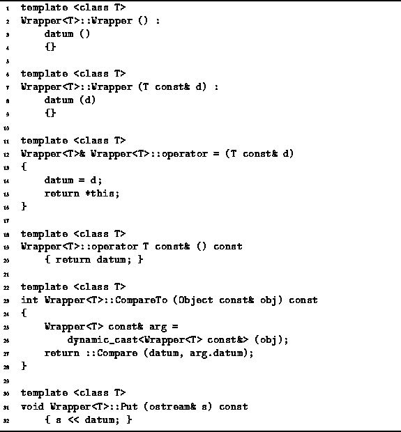
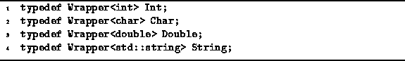

Data Structures and Algorithms
with Object-Oriented Design Patterns in C++
Data Structures and Algorithms
with Object-Oriented Design Patterns in C++
The implementation of the Wrapper<T> class member functions
is shown in Program  .
The Wrapper<T> class default constructor
simply initializes the member variable datum
using its default constructor.
A second constructor takes as its lone
argument a const reference to an object of type T
and copies that value to the member variable datum.
In effect, the constructor wraps its argument.
.
The Wrapper<T> class default constructor
simply initializes the member variable datum
using its default constructor.
A second constructor takes as its lone
argument a const reference to an object of type T
and copies that value to the member variable datum.
In effect, the constructor wraps its argument.

Program: Wrapper<T> Class Member Function Definitions
A type-cast operator is defined, operator T const&, which converts from an object of type Wrapper<T> to a const reference to an object of type T. In effect, the type-cast operator unwraps the contained object! This, together with the automatic type coercion rules of C++, makes it possible to use the wrapped object in the same context in which the unwrapped object is expected.
The Hash member function of the Wrapper<T> class
simply calls the global (non-member) function, ::Hash(T).
In effect, we have punted on the implementation of the Hash function.
The implementation of a suitable hash function
for an object of type T depends on the actual type used.
However, the Wrapper<T> class is generic--we don't know what T is.
Hash functions are discussed in Chapter .
The CompareTo function takes as its lone argument a const reference to Object. It uses the dynamiccast operator to convert the argument to the type Wrapper<T>. In C++, the dynamic cast will succeed only if the type of the referenced actually is Wrapper<T>. Otherwise a badcast exception is thrown. The CompareTo member function is implemented in the same way as the Hash member function. I.e., it calls the global (non-member) function ::Compare to do the actual comparison.
The implementation of the Put member function is trivial. It simply inserts datum into the given ostream using operator<<. Again, this assumes that the operator has already been defined for objects of type T.
Program uses the Wrapper<T> class
defined above to define the Int,
Char, Double, and String object classes
which simply encapsulate variables of type
int, char, double, and string, respectively.

Program: Int, Char, Double and String Class Definitions
These declarations require the existence of suitable
::Compare and ::Hash functions.
E.g., the Int class definition requires
the existence of a Compare(int) and a Hash(int) function.
Hash functions are described in Chapter .
The implementation of a suitable compare function
is left as a project for the reader (Project ).
 Copyright © 1997 by Bruno R. Preiss, P.Eng. All rights reserved.
Copyright © 1997 by Bruno R. Preiss, P.Eng. All rights reserved.